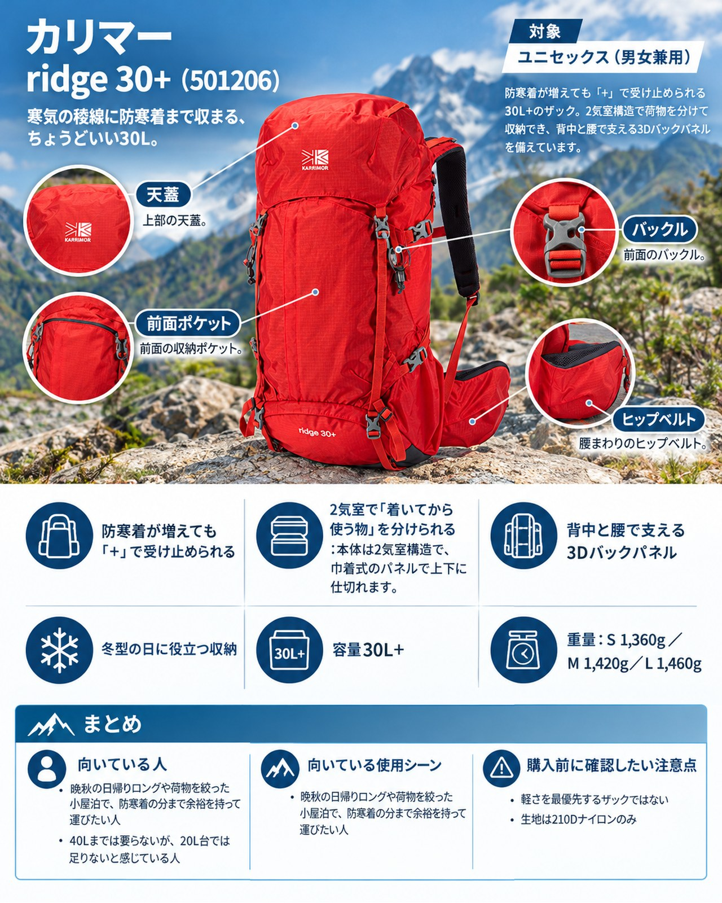

カリマー
ridge 30+

¥31,900（税込）
巾着式の2段階開口部と延ばせる雨蓋で容量を広げられる、2気室構造の30L+ザック。
購入先
基本情報
| ブランド | カリマー |
|---|---|
| カテゴリー | ザック |
| 対象 | ユニセックス |
| 価格 | ¥31,900（税込・2026-10-27 確認） |
主な特徴
- 巾着式の2段階開口部と延ばせる雨蓋で、荷物が増えた日も詰め込める
- 2気室とボトムのファスナーで荷物を分けて出し入れできる
- 3Dバックパネルと立体構造のヒップベルトで荷物を体に近づけて支える
用途・季節の目安：春・夏・秋／低山・中級山岳・山小屋泊
メーカー公表の仕様
ブランド公式ページの記載をそのまま整理しています。記載がない項目は「不明」とし、推測では書きません。
| 重量 | 1,360g（S 1,360g / M 1,420g / L 1,460g） |
|---|---|
| 素材 | 210Dナイロン |
| 防水・撥水 | 不明（公式ページに記載なし） |
| 容量 | 30L |
| サイズ展開 | 背面長 S42cm / M47cm / L52cm の3サイズ |
ヤマフィットの評価
上の公式記載をもとにヤマフィットが整理した評価です。メディアやユーザーの評価・レビューは、まだ収集していないため掲載していません。
メリット
- 巾着式の2段階開口部と延ばせる雨蓋で、荷物が増えた日も詰め込める
- 2気室とボトムのファスナーで荷物を分けて出し入れできる
- 3Dバックパネルと立体構造のヒップベルトで荷物を体に近づけて支える
- 専用レインカバーが付属
デメリット
- Sでも1,360gあり軽量ザックではない
- 生地は210Dナイロンのみ
向いている人
- 防寒着が増える季節の日帰りロングや小屋泊
- 背面長を合わせて選びたい人
向いていない人
- 軽さを最優先したい人
購入前の注意点
- サイズ感：背面長を3サイズ（42/47/52cm）から選べる
- サイズ：背面長 S42cm / M47cm / L52cm の3サイズ
- 価格・在庫・仕様は変わります。2026-10-27 時点の確認内容で、在庫は確認できていません。購入前に各販売サイトで最新情報をご確認ください。
- 山行の前には、最新の気象とルートの状況を必ずご確認ください。
参考情報源と確認日
- www.karrimor.jp（公式ページ） 2026-10-27 確認
PR広告・免責について
このページにはアフィリエイト広告が含まれます。リンク先での購入により、当サイトが報酬を受け取る場合があります。掲載順や評価は、報酬の有無や大小では決めていません。